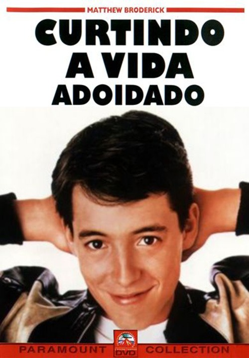

|  |
Diretor: John Hughes Com: Matthew Broderick, Alan Ruck, Mia Sara Gênero: Comédia - Legendado/Dublado Censura: Livre Lançamento: 19 de dezembro de 1986 Tempo de duração: 102 minutos Sinopse: O adolescente Ferris Bueller decide sair da rotina e engana seus pais fingindo estar doente para poder matar aula. Ele convence sua namorada, Sloane, e seu melhor amigo, Cameron, a se juntar a ele no passeio até Chicago, usando a Ferrari do pai de Cameron. No entanto, o diretor da escola sabe que Ferris está mentindo e vai atrás dele. Assistir |
|---|
 Entrou com: fulano@gmail.com || Sair
Entrou com: fulano@gmail.com || Sair